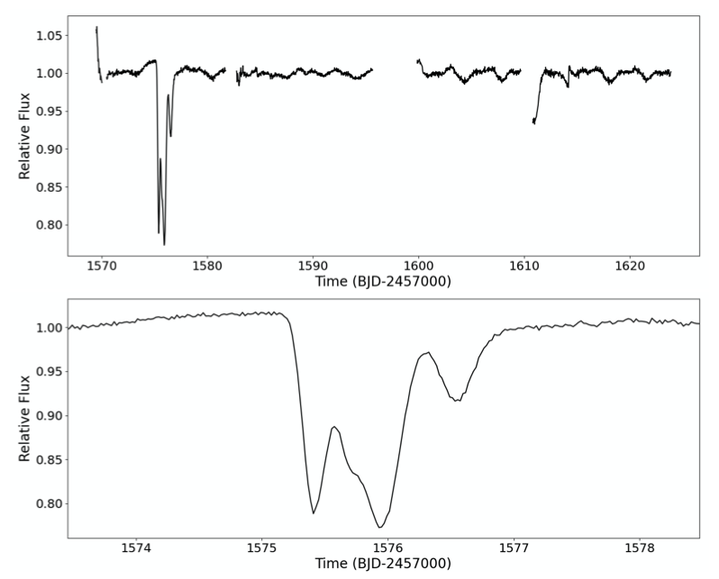
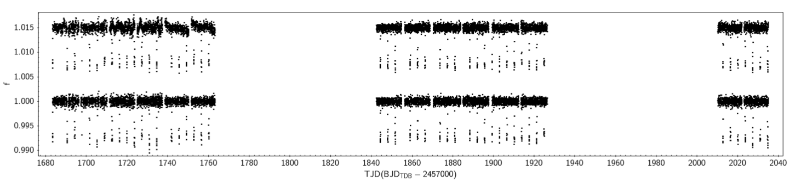
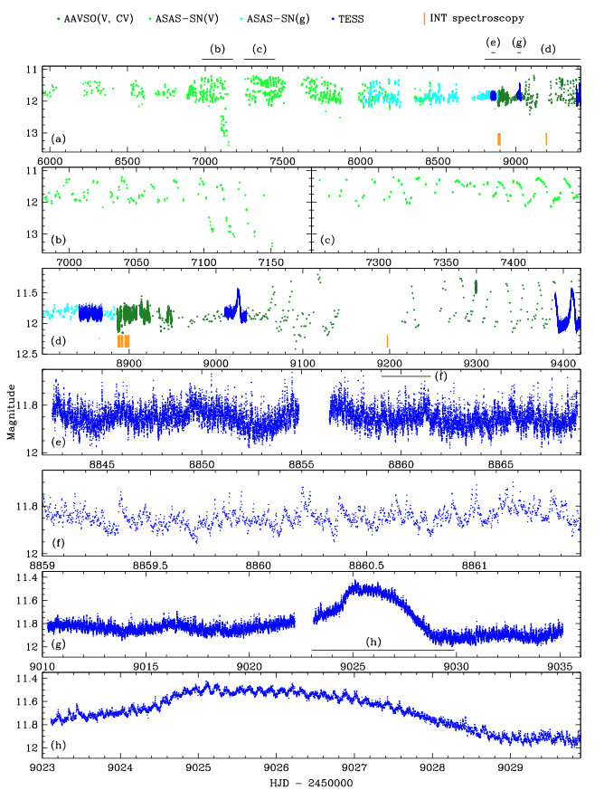

STATUS UPDATE: Orbits 1 of Sector 43 are now available to download as a TICA products from MAST
Welcome TESS followers! This week we are looking at three papers from the archive,
Mysterious Dust-emitting Object Orbiting TIC 400799224 (Powell et. al., 2021) :
In this paper the authors present the discovery of what could be a disintegrating asteroid or minor planet orbiting a star in the wide binary TIC 400799224. The system was identified in TESS Sector 10 data which presented unusual dips in the light curve.
Speckle imaging of the system went on to indicate that it actually consists of two stars of comparative brightness with a separation of 0.62". The two stars are likely bound and have a projected separation of ~300 au.
Archival ASAS-SN and Evryscope data also identified a strong periodicity of the dips at ~19.77 days, indicating that an occulting object is orbiting the host star. These dips appear to occur sporadically and are detectable only every three to five transits, suggesting a sporadically-emitting dust cloud. The cloud is quite optically thick, had a mass of ~1019 grams, and seems to block 37-75% of the light from the host star.
TIC~257060897b: an inflated, low-density, hot-Jupiter transiting a rapidly evolving subgiant star (Montalto et. al., 2021) :
A transiting exoplanet has been discovered around TIC~257060897 using TESS full frame images. Using spectra from HARPS-N and photometry from other ground-based facilities, the authors confirm that the transit is indeed caused by a planet. The host star is ~3.5 Gyr old subgiant with an an effective temperature of 6128 K, a log ~g of 4.2, a [Fe/H] value of 0.2, a mass of 1.32 M⊙ and a radius of 1.82 R⊙.
The transiting planet TIC~257060897b, is a giant planet with a mass of 0.67 MJ, a radius of 1.49 RJ, has an orbital period of ~3.66 days, and very low density of 0.25 g cm-3. Given this density the author argue that the inflation of the planets radius may be related to the fast increase of the host luminosity as it evolves beyond the main sequence. The planet could therefore be a precursor of the inflated radius short period planets, which are found around low luminosity red giant branch stars.
ASAS J071404+7004.3 -- a close, bright nova-like with gusty winds (Inight et. al., 2021) :
ASAS J071404+7004.3 is a bright nova-like cataclysmic with a V-band magnitude of 11.8 and at a distance of 212 pc. This paper presents optical spectroscopy of the object from the Isaac Newton Telescope in addition to UV data from Swift X-ray and photometry from TESS. Using these data the authors find a period of 3.27 hrs and a mass transfer rate of 4 - 9 x 10-9 M⊙ yr-1.
Historical photometry indicates at least one low state period, establishing the system as a VY Scl star. VY Scl stars show no outbursts, but are are nova like objects that occasionally experience a greater than one magnitude fall in brightness, bringing them into the dwarf nova instability strip.
High cadence spectroscopy also reveals the presence of rapidly changing winds emanating from the accretion disc. These winds were then modeled, the results of which indicated that all emission lines could emanate from the wind, which would explain the lack of double peaked lines in these systems.

Fig. 1: Taken from Powell et. al., (2021). The top panel is the eleanor corrected flux of TIC 400799224 in TESS Sectors 10 and 11. The bottom panel is the close-up view of the the ∼1.6-day event demonstrates a substantial occulting of the host star by a highly irregular body.

Fig. 2: Taken from Montalto et. al., (2021). Top: TESS light curve corrected for systematics with eigenvector analysis. Bottom: final light curve normalized by a B-spline fitted on out-of-transit data. The light curves are offset vertically by an arbitrary amount for clarity.

Fig. 3: Taken from Inight et. al., (2021). Ground and space-based photometry of ASAS J0714+7004. The horizontal bars above the top panel, and within panels (e) and (g), indicate the date range of the zoom-in views. Note the change in the scale of the magnitude axis in the different panels. The system exhibits quasi-periodic brightenings most of the time, but experienced a fainter state (a,b) as well as a phase of relative inactivity (a,e,f). The high-cadence TESS data reveals short-term flickering (e,f) and low-amplitude orbital modulations at the orbital period (g,h).